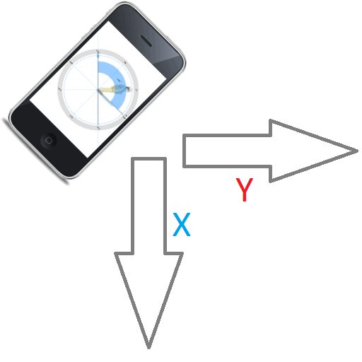

Mobile app internals
This page describes how to measure angles using a phone's accelerometer.
This page describes how to measure angles using a phone's accelerometer.
The core thing that provides information about the orientation of the smartphone is the Accelerometer sensor.
Good references about sensors can be found here:
Sensor APIs,
Accelerometer and
Sensors for the web.
In this particular implementation, accessing the accelerometer from the JavaScript is quite simple:
if ('Accelerometer' in window) {
try {
const accelerometer = new Accelerometer({frequency});
accelerometer.onerror = ({error}) => handleError(error);
accelerometer.onreading = () => handleValue(accelerometer);
accelerometer.start();
return accelerometer;
} catch (error) {
handleError(error);
}
} else {
handleError({name: 'NotSupported'});
}
At the given frequency, the accelerometer triggers the "handleValue function and passes gravity values:
const handleValue = ({x, y}) => {
const normalized = normalizeGravity(x, y);
const newDegrees = Math.atan2(normalized.y, normalized.x) * 180 / Math.PI;
if (Math.abs(newDegrees - degrees) > precision) {
degrees = newDegrees;
changeCallback(degrees);
}
};
Where "x" and "y" are values from -9.8 to 9.8, depends on how the device is rotated.
In addition to the physical rotation, there is a logical orientation (the screen can rotate automatically when you move a device between portrait and landscape orientation). In this case it is necessary to invert gravity values to compensate screen rotation:
const normalizeGravity = (x, y) => {
switch (screen.orientation.type) {
case 'portrait-secondary':
return {x: -x, y: -y};
case 'landscape-primary':
return {x: -y, y: x};
case 'landscape-secondary':
return {x: y, y: -x};
default:
return {x, y};
}
};
After that these "x" and "y" values can be converted to radians:
radians = Math.atan2(y, x),
and to degrees degrees = radians * 180 / Math.PI".
Then this angle is used to rotate the vector arrow in the SVG image:
pointerLine.setAttribute('transform', `rotate(${-degrees})`);
pointerMarker.setAttribute('transform', `rotate(${-degrees})`);
Complete code can be found at github